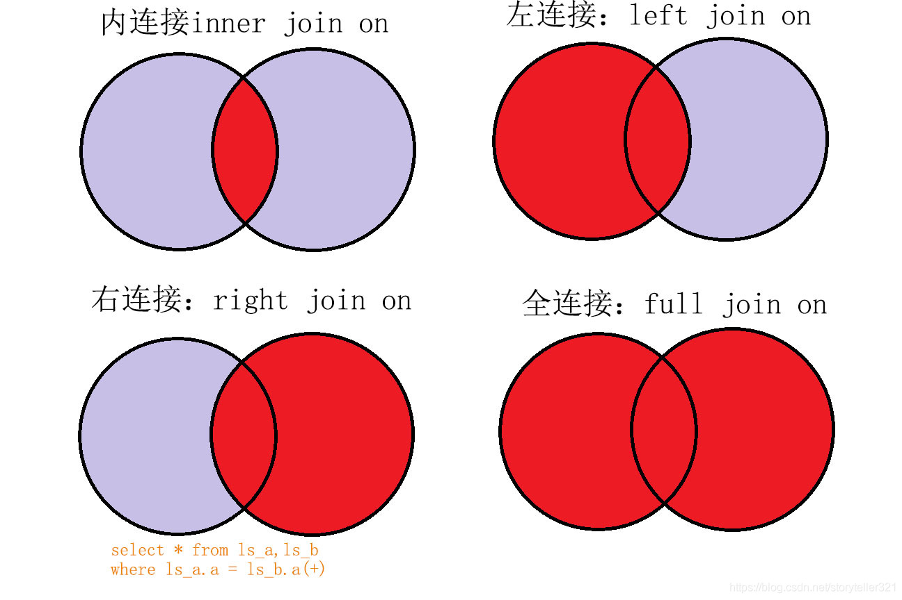

多表查詢、JOIN ON連接
尚硅谷MySQL基礎課-03
多表查詢
從多張表格的查詢結果，連結彙整成一個表
前提
- 需要有連接條件
- 沒有正確的連接條件，則會變成每個元素都相乘得出超爆量的結果，數學上稱這種集合為
笛卡爾積，例如貓、狗X黑、白、黃的排列組合
- 沒有正確的連接條件，則會變成每個元素都相乘得出超爆量的結果，數學上稱這種集合為
- 正確連接舉例:員工表中有部門ID，部門表有部門ID，用其串聯顯示部門名稱
SELECT e.employee_id,d.department_id,d.department_name
FROM employees e,departments d
WHERE e.department_id=d.department_id
ORDER BY employee_id;
- 如果查詢的表中，多個表都有同一字段，必須指明所在的表，此例中
d.department_id就是必須指明的，否則報錯- 為了提高效率與可讀性，使用字段最好都指名來源表
- 最好使用別名，並且一但起了別名就必須使用別名，否則報錯
- 當想實現N個表的多表查詢，必須至少有N-1個連接條件，例如:
SELECT e.employee_id,d.department_id,d.department_name,l.city
FROM employees e,departments d,locations l
WHERE e.department_id=d.department_id && d.location_id=l.location_id
ORDER BY employee_id;
分類
等值 vs 非等值
-- 非等值舉例，比如在某個範圍之內
SELECT e.employee_id,e.last_name,j.grade_level
FROM employees e,job_grades j
WHERE e.salary>=j.lowest_sal && e.salary<=j.highest_sal
ORDER BY employee_id;
自連接 vs 非自連接
-- 自連接舉例，將同一張表拆成2個別名
SELECT emp.employee_id,emp.last_name,mgr.employee_id,mgr.last_name
FROM employees emp ,employees mgr
WHERE emp.`manager_id` = mgr.`employee_id`;
內連接 vs 外連接
- 內連接:就是小時候excel用的
VLOOKUP，返回的是兩個表都有匹配到的項目 - 外連接:返回包含不匹配的部分，又分左、右、全，還是上圖吧
- 當看到描述為查詢"
所有“的XXX就要想到應該是外連接
- 當看到描述為查詢"

-
這個用
(+)實現左外連是SQL92語法，但MySQL不認，必須使用JOIN ... ON，下面詳述 -
又MySQL不支援
FULL OUTER JOIN，還需要關鍵字UNION輔助
實現
這張圖基本上已經說明一切

JOIN … ON
- 用來取代
WHERE a=b的用法 - 舉例:
select *
from employees inner join departments d
on d.department_id = employees.department_id;
- 通常把列數較多的放在
A然後使用left join
UNION
- 可以合併多個SELECT的結果，前提是他們的列數與對應的數據類型相同
- 格式:
SELECT column,... FROM table1
UNION [ALL]
SELECT column,... FROM table2
-
UNION會去除重複項，UNION ALL則可能有重複的部分- 因為沒檢查就合併所以
UNION ALL效率更高
- 因為沒檢查就合併所以
-
如果可重複或確定不存在重複，盡量用
UNION ALL
- 範例，返回姓名以A開頭與薪水>5000的不重複員工名單
SELECT * FROM employees WHERE employees.first_name LIKE 'A%'
UNION
SELECT * FROM employees WHERE salary>5000;
MySQL實現full outer join
- 左下圖
#實現查詢結果是A∪B
#用左外的A，union 右外的B
select 欄位清單
from A表 left join B表
on 關聯條件
where 等其他子句
union
select 欄位清單
from A表 right join B表
on 關聯條件
where 等其他子句;
- 右下圖
#實現A∪B - A∩B 或 (A - A∩B) ∪ （B - A∩B）
#使用左外的 (A - A∩B) union 右外的（B - A∩B）
select 欄位清單
from A表 left join B表
on 關聯條件
where 從表關聯欄位 is null and 等其他子句
union
select 欄位清單
from A表 right join B表
on 關聯條件
where 從表關聯欄位 is null and 等其他子句
NATURAL JOIN自然連接
- 自動查詢兩張表中所有相同的字段並等值連接，舉例:
select * from employees
natural join departments;
- 如果存在多個相同字段，結果可能比預期的少，因為要每個字段都等值
USING
- 手動指定等值連接同名的字段，舉例:
select * from employees
join departments
using (department_id);
多表查詢效率問題
- 多表連接相當於多層套用for循環，資源消耗嚴重
- 超過三個表禁止join
- 需要join的字段，數據類型必須一致、保證被關聯的字段有索引
上次修改於 2021-12-18